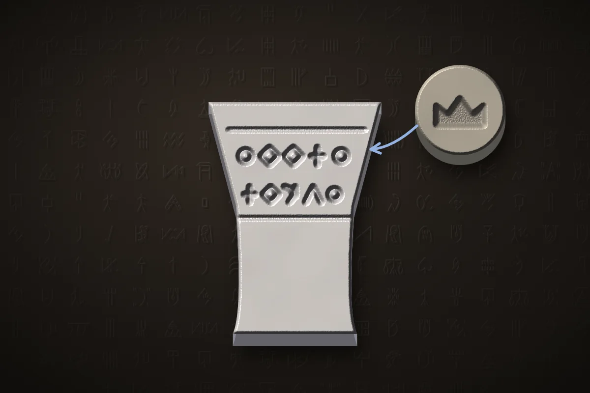

Paper · 2022
Linear Elamite read, through kings’ names
Desset, Tabibzadeh, Kervran, Basello and Marchesi · Zeitschrift für Assyriologie 112:11–60

In a sentence
The most recent ancient script to be read, and a model of what the Indus script is missing.
In plain words
The team read Linear Elamite by finding the names of kings they already knew from cuneiform, written on silver beakers that could be dated. Each name gave the sounds of several signs. The Indus script has no such object yet: no text in a known script that names an Indus person.
Technical detail
Anchored on royal names and titles from cuneiform on datable objects (silver gunagi beakers, Desset 2018). Critiques: Dahl 2023; Mäder; Kelley et al. 2022 call the proposed Proto-Elamite values premature.
How we read it
Read: full text (the published version, ZA 112(1):11-60, from the University of Bologna repository copy deposited by co-author Marchesi; the publisher site returned an empty 202 response; the critiques named in news.json, Dahl 2023, Mäder and Kelley et al. 2022, were not opened). Sources opened: cris.unibo.it/bitstream/11585/890284/1/Marchesi%20et%20al%202022_Linea, www.degruyterbrill.com/document/doi/10.1515/za-2022-0003/pdf.
What they did
- Desset and colleagues gathered the 40 Linear Elamite texts known in 2021 (Table 1) and a glyph list, recording which texts each glyph occurs in (section 2.1, Fig. 3).
- They chose 9 cuneiform inscriptions of the same rulers and the same object types, mostly inscribed silver and copper beakers, as the known side (Table 2, section 2.2).
- They did not have true bilinguals: the Puzur-Sušinak cuneiform and Linear Elamite texts share names and titles but never translate each other (section 2.3).
- Starting from older correct readings and from expected names (Insušinak, Puzur-Sušinak, then the rulers Šilhaha, Eparti and the god Napireša on the Kam-Firuz beakers), they read the signs in 13 steps, each step adding names, titles and set phrases that recur in Elamite royal inscriptions in cuneiform (section 2.3, Fig. 5).
- They then described the system: an alpha-syllabary of vowels, consonants and CV signs, with homophones, defective spellings and a dividing sign (section 3).
What they found
- Through the 13 steps they read 72 signs with 73 values, which cover 96.3% of the 1,890 sign occurrences; 70 occurrences (about 3.7%) of 4 rare signs and 33 hapax signs remain unread (section 2.3, p. 32).
- The grid works with 77 values: 5 vowels, 12 consonants and 60 CV syllables (section 5, p. 52); no logograms or determinatives have been detected (section 2.3, note 27).
- They estimate the sign inventory at 80 to 110, slightly high because of unidentified graphic variants (section 3, before 3.2).
- They find 15 apparently homophonic pairs and one triplet; 3 pairs are probably graphic variants and 3 are true homophones (section 3.3).
- The key Kam-Firuz beakers were hypothesised to carry the names Šilhaha, Eparti and Napireša because of their supposed historical background, since none of them bears both scripts (section 2.3, p. 32).
- Two of the 40 texts are Gulf-type round stamp seals: V, a steatite seal of 3 signs (Ligabue collection), and G′, a gold round stamp seal of 6 signs (Table 1, group 7).
- They propose that Proto-Elamite and Linear Elamite are two stages of one ‘Proto-Iranian’ writing, and note that the Indus script is probably mixed phonographic and logographic given its number of signs (section 5).
Strengths and limits
- The method is the classic one: proper names and standard royal phrases on dated, same-type objects give many sign values that check each other across texts.
- The anchors were partly assumed: the names on the Kam-Firuz beakers were expected from the objects’ supposed origin, and most of these beakers come from a private collection rather than regular excavations (Table 1).
- The corpus is tiny, 40 texts and 1,890 sign occurrences, which the authors say is why a complete decipherment cannot yet be claimed.
- The approach needed a known language (Elamite) with long cuneiform texts of the same rulers; the Indus case has neither.
- Later critiques were not read here, so how far specialists accept the values is not assessed in this summary.
What the authors say comes next
- Find more texts to complete the phonemic grid with the missing sign values. (section 2.3, p. 32)
- Apply the Linear Elamite values backwards to the graphic counterparts in Proto-Elamite, and combine this with the Susa onomasticon of the Old Akkadian period to read Proto-Elamite personal names. (section 5 and Fig. 11, points 3-4)
- Study the 3000/2900-2300 BCE stage of the script, now known from only four documents (O, E′, K and R). (section 5)
- Renewed excavations at Susa and in the Jiroft area could show the transition from Proto-Elamite to Linear Elamite. (section 5)
Ideas it gives us
- Use Linear Elamite as a known-answer bench for the project’s structural tools: from sign sequences alone, can they recover an alpha-syllabary with about 80-110 signs, few logograms, a divider and homophone pairs, at a corpus of 1,890 tokens? It is the only recently read script at Indus scale; if the tools cannot recover its type, their Indus verdicts on script type carry little weight. Open data enough: no. Needs: A machine-readable sign-sequence transcription of the 40 texts; the paper gives only the glyph-by-text list (pp. 19-21) and drawings, so the sequences must be keyed or taken from a project corpus whose licence allows reuse.
- Copy their duplicate-alignment step: align Indus texts that recur on several independent objects (not moulded copies) and differ in one slot, and test whether the differing signs are closer in shape than random sign pairs of matched frequency. In Linear Elamite the composite text F//G//H and other duplicates exposed graphic variants and homophones; this is a language-free way to find allographs that is different from the perplexity test in atlas 7.7. Open data enough: yes. Needs: M77 and ICIT texts with object identifiers, family splits, and the project’s sign images for shape distances.
- Add the two Linear Elamite Gulf-type round seals (V and G′) as a check on the Gulf round-seal set: confirm they are not counted as Indus texts, and use them as an example of a non-Indus script on the same seal type. The round-seal order-breaking result depends on which seals are in the Gulf set; a Gulf seal type carrying a second script shows that seal shape alone does not mark the script. Open data enough: no. Needs: Images and sign lists of V (Winkelmann 1999) and G′ (Christie’s London catalogue), cited in Table 1 but not open.
What we take from it
Using itThis is why we search for names of people from the Indus region in cuneiform records, and asked museums for seal impressions on tablets that name them.